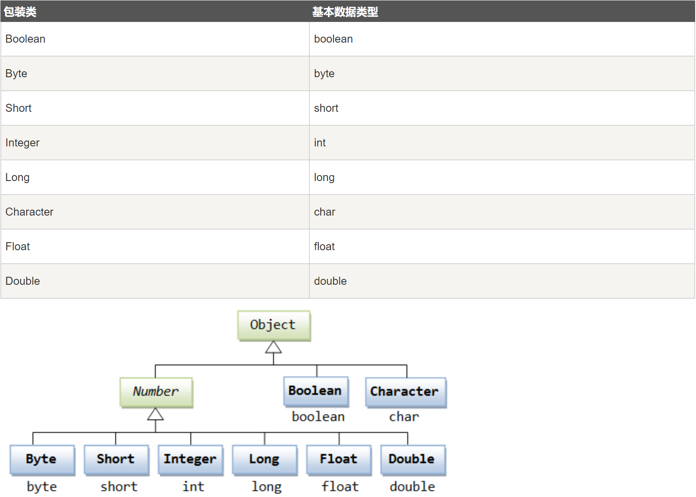
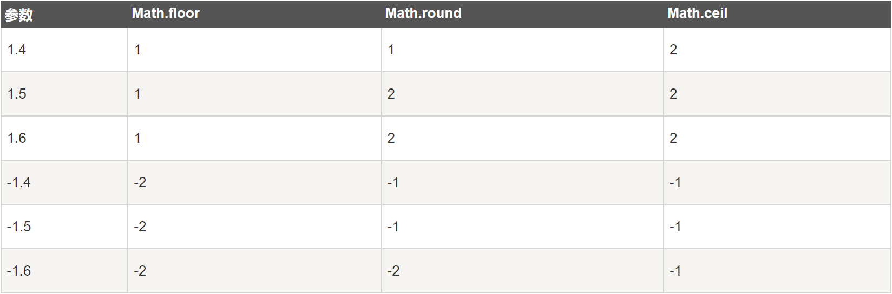

8 Java数字类Number和Math¶

Number类¶
Java是纯面向对象编程语言，为了以对象的方式使用内置数据类型，比如byte、int、long、double等，Java对它们进行了封装，封装后的类称为包装类。这里的封装一般也叫做装箱，反之叫做拆箱。

所有的数字包装类，都是抽象基类Number的子类，包括Byte、Short、Integer、Long、Float、Double。
示例：
public class Test{
public static void main(String[] args){
Integer x = 5; // 装箱
x = x + 10; // 拆箱
System.out.println(x);
}
}
Math类¶
为了支持数学运算，Java提供了Math类，可以进行指数、对数、平方根等数学运算。
示例：
public class Test {
public static void main (String []args)
{
System.out.println("90 度的正弦值：" + Math.sin(Math.PI/2));
System.out.println("0度的余弦值：" + Math.cos(0));
System.out.println("60度的正切值：" + Math.tan(Math.PI/3));
System.out.println("1的反正切值： " + Math.atan(1));
System.out.println("π/2的角度值：" + Math.toDegrees(Math.PI/2));
System.out.println(Math.PI);
}
}
对于四舍五入，Math提供了round、floor、ceil三个方法：
round：四舍五入
floor：向下取整
ceil：向上取整（返回double类型）
示例：

基本类型与包装类区别¶
基本类型不是对象，不需要new关键字创建，包装类需要使用new关键字创建对象。
存储方式不同，基本类型的值存在堆栈中，包装类的实例存在堆中。
初始值不同，包装类的初始值为null，基本类型视具体类型而定，比如int初始值为0，boolean初始值为false。
有些场景下只能使用包装类，比如与集合类交互，使用泛型和反射调用函数，某个字段允许null值，就只能使用包装类。